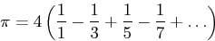

Welcome to C programming! Over the next few days you will have time in class to work on a variety of programming exercises. These exercises will count towards your in-class participation grade. You are expected to turn in all programs from category A, one program from category B, and one program from category C. These will be due the class day before Homework 3 is assigned.
Create a .tgz archive of your C programs and email it to
dferry_submit@slu.edu.
Please include your name and the names of any partners in the body of your email.
The simple syntax for creating a .tgz archive is as follows:
tar -zvcf archive_name.tgz your_directory
The syntax for unpacking a .tgz archive is:
tar -zvxf archive.tgz
Note that your archive must not include any binary executable files, meaning any compiled programs or intermediate build objects (.o files, for example). This will cause your email to be rejected by most services.
In this exercise you will create a program that does simple output to the console.
First we need a Linux environment, so we will remotely connect to the department server at hopper.slu.edu. Alternatively, you can login locally to the classroom machines and do work there. In general you will only ever need Linux terminal access for these exercises, though you're welcome to use NoMachine if you'd like the GUI desktop. If you're using one of the classroom machines and would like to login to Hopper, you can login by typing at a terminal:
ssh username@hopper.slu.edu
Make a new directory for this class with the command mkdir 2400, then
change to that directory with the command cd 2400
First, open a new file called 'hello.c' in the text editor of your choice. At the top of your file include some comments indicating your authorship and the purpose of the program. Then, include the standard input/output header file with the line:
#include <stdio.h>
Next, create the entry point for your program, which is a function called main,
your main function should almost always look like this:
int main( int argc, char* argv[] ){
//Your code goes here
return 0;
}
The argc and argv parameters are used to get program arguments
from the command line. We'll use them in a bit. Also notice that your program returns an integer.
This is the return value of the program- returning zero indicates the program terminated normally,
while a non-zero value indicates the program quit because of an error.
Next, insert the output statement inside your main function:
printf("Hello, world!\n");
You can now compile and run your program with the commands:
gcc hello.c -o hello
./hello
Your program should print the string "Hello, world!" to the console. If it doesn't, ask the instructor for help.
Next, modify your program so that it prints out the array called argv.
To do so, you will need to use a for loop. The input argument argc
tells you how many elements are in argv, and recall that in C that arrays
are zero-indexed. Also, beware that the first element of argv is always the
name of the program that is being run. Thus, if you executed your program as such:
./hello abcd 123 45.5
Then argv would have the string values:
argv[0] = "hello" argv[1] = "abcd" argv[2] = "123" argv[3] = "45.5"
For now, we just want to print out each argument in turn. For example, if you ran your program with the above arguments it should print out something like:
Hello, world! Argument 0 is 'hello' Argument 1 is 'abcd' Argument 2 is '123' Argument 3 is '45.5'
You can do this by calling the printf() function like so:
printf("Argument %d is %s\n", index, argv[index]);
The "%d" and "%s" are called format specifiers, and the
first one specifies that an integer is going to be printed at that location, while the second
one specifies that a string is going to be printed at its location. The second parameter to
printf (which is index above) matches the first format specifier,
the %d, while the second parameter matches the second specifier. You can see
the full documentation by typing man 3 printf at a terminal, but it's probably
easier to look up examples online.
Write a for loop that prints out all arguments of your program. Then run
your program a few times with different sets of arguments to make sure that it runs the
way you think it should.
Write a program that takes a single argument, converts it to an integer with
the strtol() function, and casts that value to an unsigned char.
Then, print out both the signed and unsigned values. The output should look something
like:
Signed representation: -1, unsigned representation: 255
The function strtol() converts a string to an integer, and can be used by calling:
int input = strtol(argv[1], NULL, 10);
Which specifies that the string to convert is argv[1], and to use a base-10 number
system. The second parameter is for extra functionality we don't need for this program.
You can cast an integer to an unsigned char simply by assignment. E.g.:
unsigned char output = input;
Remember that an unsigned char is an 8-bit data type. What happens when you pass a negative number to your program? What happens when you pass a number above 255 to your program? Can you confirm that this is what should happen by looking at the numbers binary representation?
The value of pi can be approximated by evaluating a partial sum of the form:
Write a program that sums up the first N places of this expression, where
N is given as a command line input. Use strtol() to convert the input to an
integer as in the previous exercise.
Be careful of the difference between integer division and floating point division:
double x = 1/5; //Integer division, value of x is 0 double x = 1.0/(double)5; //Floating point division, value of x is 0.2
In the second statement the one is explictly given to be a floating point number by
including the decimal point, and the integer five is cast to be of type double.
You can print out a floating point number with the statement:
printf("My value of Pi: %0.5f\n", myPi);
Note that the format specifier for floating point numbers is %f,
and the 0.5 specifies that the function will print five places
after the decimal point.
Run your program for values of N equal to 1, 10, 100, 1000, etc. You should see the value converging to pi, which is:
3.141592653589793
The rand() function will generate random non-negative integers. Write a program that takes as command line arguments an integer N and S, seeds the random number generator with the value S, generates N random integers, and then prints the minimum, maximum, and average of all values generated.
You can seed the random number generator with the function srand(), which determines the sequence of random numbers generated. Be sure to include the header file stdlib.h for both rand() and srand(). See the man pages (man 3 rand and man 3 srand) for details.
Be careful of floating point division versus integer division! You can print out a floating point number with the statement:
printf("Average: %0.5f\n", avg);
Hint: If you'd like a sequence to test your code, you can use the following numbers:
1 1 2 3 5 7 9 16 25 min: 1 max: 25 average: 7.666 repeating
If you roll a six-sided dice the probability of any value between 1 and 6 coming up is exactly 1/6. If you roll a pair of six sided dice then the odds of getting a combined two is not the same as getting a combined ten- there's a 1/36 chance of rolling a two, but there's a 3/36 chance of rolling a combined 10. This is a situation that's not obvious to analyze but easy to simulate!
Write a program that takes two command line inputs, N and D. Your program should simulate N throws of D dice, and then print the experimentally observed probability of each combination. For example, if N=100 and D=5 then you would simulate 50 throws of 5 dice. If you saw the number 14 show up 3 times, then the observed probability of 14 would be 3/50.
In general, the observed probability of a number X is:
(number of times you saw X)/N
Hint: The maximum possible value from thowing D dice is D*6. You can declare an array of length D*6 with the line:
int *array = malloc( D*6*sizeof(int) );
Hint: The rand() function generates non-negative integers. Use the modulus operator (%) with rand() to generate a single random dice roll like so:
one_dice = rand()%6 + 1;
FizzBuzz is a miraculous and/or awful test of programming proficiency. (Look it up and read the internet comments... trust me.) This is FizzBuzz with a twist.
Write a program that takes a 32-bit integer N, and for each bit in N do the following (starting with the least significant bit):
Also, separate every four bits by a space, to make the output readable. As an example, if you gave your program the number 16405, which has the binary representation
0000 0000 0000 0000 0100 0000 0001 0101
Your program should print
0000 0000 0000 0000 0FB00 0000 000B 0F01
Notice that the bit in place 1 is printed as a 1 because place 1 is not divisible by either 3 or 5. However, the bit in place 3 is printed as F, because 3 is divisible by 3. Note also that the bit in place 15 prints FB because 15 is divisble by 3 and 5.
Hint: You can get the value of the first place by doing a bitwise AND with 1, or the value of the last place by doing a bitwise AND with 0x80000000 (or 2147483648 in decimal) e.g.:
int X = input;
printf("%d", X&0x1); //Prints 1 if first bit is 1, 0 if first bit is 0
printf("%d", X&0x8000000); //Prints 1 if last bit is 1, 0 if last bit is 0
Hint: Also consider using bit shifts. First write a program that prints out each bit of the input correctly, then add the FizzBuzz functionality.